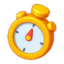

Trang chủ › Thể loại: Lõi gameplay
Thể loại: Lõi gameplay
5 trang
18 cơ chế và chướng ngại
PlayConfig liệt kê 18 cơ chế phụ, mỗi cơ chế có một mốc level bắt đầu riêng cho ba nhánh biến thể (StartLevel1, StartLevel2, StartLevel3).
🔓 Theo PlayConfig.StartLevel1/2/3. Giá trị 0 nghĩa là cơ chế không dùng ở nhánh đó. Khi một cơ chế mở lần đầu, UIPanelUnlockTarget hiện popup giới thiệu.
8 use case · 3 config

Cơ chế chơi trong màn
Đây là vòng chơi lõi.
🔓 Mở ngay từ level 1. Các cơ chế phụ mở dần theo PlayConfig.StartLevel1/2/3 tương ứng ba nhánh biến thể level.
8 use case · 7 config
Hướng dẫn người chơi mới
Hướng dẫn chia thành hai lớp.
🔓 Chạy tự động ở những lần đầu tương ứng.
3 use case · 3 config

Khởi động & vòng đời app
Boot là singleton khởi tạo toàn bộ game.
🔓 Luôn chạy. Scene khởi động duy nhất là Assets/Scenes/level0.unity; hai scene còn lại (AssetRes/Scenes/GameMain.unity, GameLevel.unity) nằm trong bundle YooAsset và được nạp động.
4 use case · 6 config

Kết thúc màn và hồi sinh
Khi màn kết thúc, game đi qua ba màn hình.
🔓 Luôn có từ level 1, nhưng quảng cáo chỉ bắt đầu xuất hiện từ level 3.
4 use case · 3 config